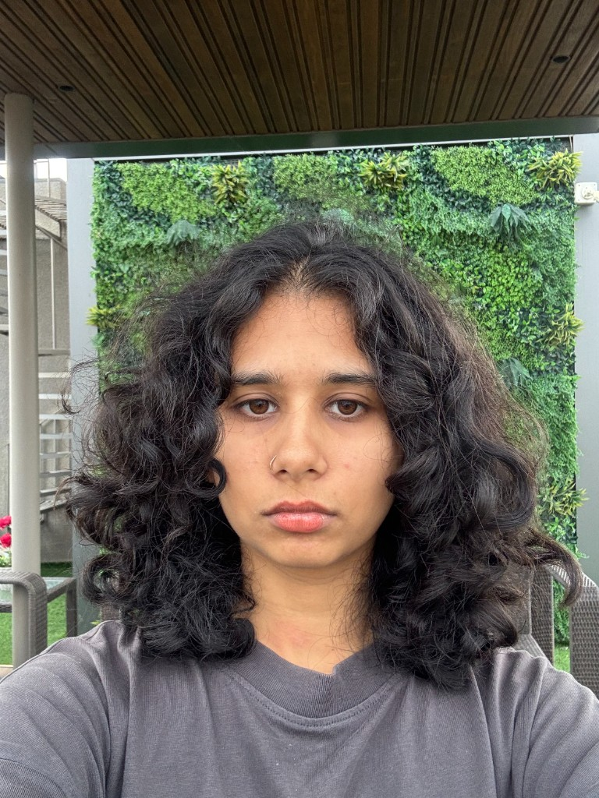

Mishika Lunia
Research Associate
KCDH, Ashoka University
My current work focuses on public health and building technology frameworks to standardise public health research across India. I also contribute to several ongoing public health projects, including research exploring how industrialisation affects the human body, with a particular focus on ageing.
I'm deeply interested in public health and bio-design. I aim to explore these themes through my work and contribute to advancing both research and real-world impact. I have a specific interest in women's health. I aim to work on projects that bridge the gap between computational research and industry applications in women's health.
In order to get in touch, reach out to me at mishikalunia [at] gmail [dot] com.